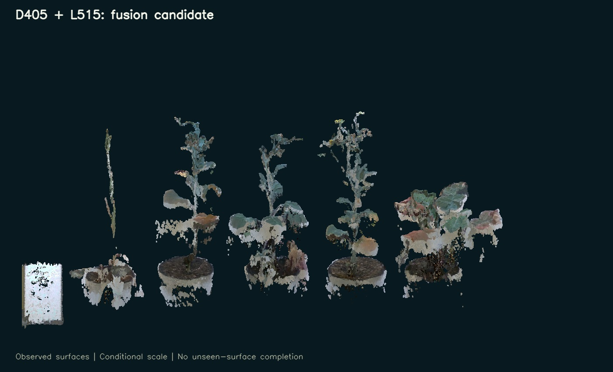

<script src="/research-assets.js"></script><!doctype html><html lang="en"><meta charset="utf-8"><meta name="viewport" content="width=device-width,initial-scale=1"><title>PhenoFusion3D — separate camera results and fusion</title>
<style>body{margin:0;background:#071923;color:#eaf4f4;font:16px/1.6 system-ui,sans-serif}main{max-width:1100px;margin:auto;padding:48px 28px}h1{font-size:clamp(28px,4vw,44px);line-height:1.15;font-weight:600}p{max-width:850px;color:#afc6cf}.eyebrow{letter-spacing:2px;font-size:12px;color:#80c3c0}.grid{display:grid;grid-template-columns:repeat(auto-fit,minmax(270px,1fr));gap:18px;margin:30px 0}.card{background:#102b39;border:1px solid #2c4e60;border-radius:12px;padding:24px}.card h2{margin:0;font-size:24px}.card p{font-size:15px}.button{display:inline-block;padding:9px 17px;border-radius:6px;background:#84cec6;color:#09232c;font-weight:650;text-decoration:none}a{color:#9bddd7}small{color:#91afb9}figure{margin:30px 0}img{max-width:100%;border-radius:10px}table{border-collapse:collapse;width:100%;max-width:850px}td,th{text-align:left;padding:10px;border-bottom:1px solid #2c4e60}aside{padding:20px 24px;border-left:3px solid #e9ba6e;background:#172c36}footer{margin-top:38px;font-size:14px;color:#8ba9b4}</style>
<main><div class="eyebrow">PHENOFUSION3D · 28 SEPTEMBER RECORDINGS · PROCESSED 7 OCTOBER 2026</div><h1>Two cameras. Separate results.<br>A traceable fusion candidate.</h1>
<p>The D405 and L515 reconstructions are preserved individually. The combined result retains D405 geometry and adds selected measured L515 surfaces. Every fused point retains its source-camera identity and original point index.</p>
<div class="grid"><section class="card"><small>PRESERVED SOURCE</small><h2>D405</h2><p>The existing 64-view RGB-stereo reconstruction and its earlier controlled comparisons.</p><a class="button" href="../research_20260928_improvement_20261007/comparison/index.html">Open D405</a></section>
<section class="card"><small>SEPARATE NEW RESULT</small><h2>L515</h2><p>64 registered sensor-depth views. 1,598,977 supported scene points, with optional cleanup saved separately.</p><a class="button" href="../research_l515_20261007/l515_sensor_v1/review/index.html">Open L515</a><p><a href="../research_l515_20261007/l515_sensor_v1/RECONSTRUCTION_REPORT.md">Method and evidence</a></p></section>
<section class="card"><small>EXPLORATORY FUSION · VERSION 1</small><h2>D405 + L515</h2><p>1,732,490 inspection-region points. Switch sources, see camera contributions, and inspect withheld overlaps at the same angle.</p><a class="button" href="v1/review/index.html">Open fusion comparison</a><p><a href="v1/FUSION_REPORT.md">Fusion report</a></p></section><section class="card"><small>SEPARATE SOURCE-REVIEWED CANDIDATE</small><h2>Five-plant cleanup</h2><p>435,917 selected plant points. Inspect each specimen, compare with the original fusion, and show retained uncertain regions in orange.</p><a class="button" href="../research_plant_cleanup_20261007/v1/review/index.html">Open plant cleanup</a><p><a href="../research_plant_cleanup_20261007/v1/CLEANUP_REPORT.md">Cleanup method and limitations</a></p></section></div>
<figure><figcaption><small>Observed geometry only. Pots and some surrounding structure remain; this is an inspection region, not a trait segmentation.</small></figcaption></figure>
<h2>What L515 contributes</h2><table><tr><th>Contribution in the shared region</th><th>Points</th></tr><tr><td>Preserved D405</td><td>1,719,001</td></tr><tr><td>L515 additions with at least two agreeing D405 depth maps</td><td>8,330</td></tr><tr><td>L515 complementary candidates with fewer than two D405 votes</td><td>5,159</td></tr><tr><td>Uncertain or contradictory nonduplicate L515 overlaps withheld</td><td>21,785</td></tr></table>
<p>Most L515 points overlap surfaces already recovered by D405. Additional points are not a percentage of plant completeness. The independent matched-soil check gave 3.41 mm median disagreement and 7.42 mm at the 90th percentile; these remain conditional internal comparisons.</p>
<aside><strong>Research status</strong><p>Gaps remain, particularly in plant 1 and poorly observed thin surfaces. Scale and printed board dimensions are unverified. The empirical surface alignment is not certified physical camera calibration. This result is for comparative inspection and further validation.</p></aside>
<p><a href="v1/qa/INDEPENDENT_FUSION_QA.md">Independent fusion verification</a> · <a href="../research_l515_20261007/qa/INDEPENDENT_SENSOR_QA.md">Independent L515 verification</a> · <a href="../research_l515_20261007/cross_camera/CROSS_CAMERA_REVIEW.md">Alignment study</a> · <a href="../research_l515_20261007/calibration/CALIBRATION_REVIEW.md">Checkerboard study</a></p>
<footer>Local research outputs. Raw recordings, original reconstructions and working lab acquisition software are preserved. Hyperspectral mapping and specimen-level trait validation are separate subsequent stages.</footer></main></html>
